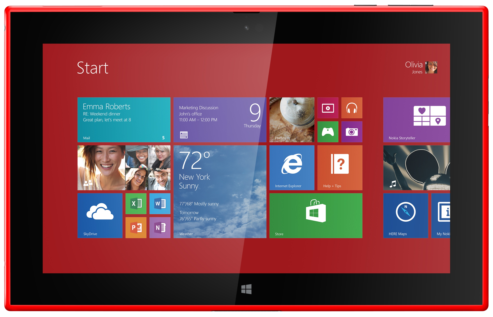
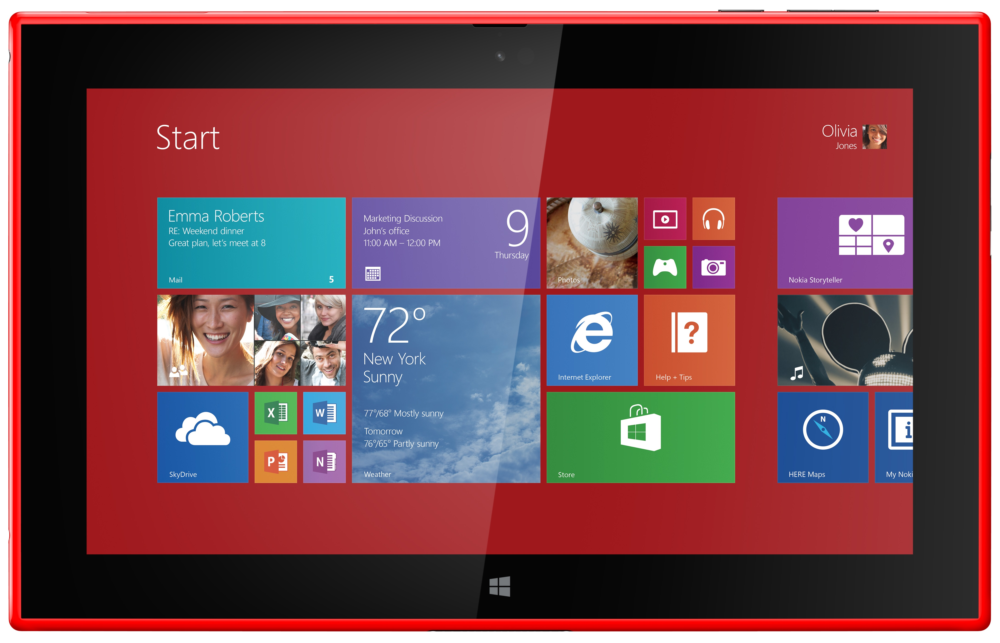

This experiment demonstrates ability to reshape/adjust according to dimension of display. Here, I have considered three devices mainly desktop, tablet and mobile. This is achieved using CSS's @media attribute. Width of value greater than 600px is considered to be screen of Desktop computer. Width of value between 400px and 600px is considered to be of tablet and width less than 400px is of mobile devices.
@media screen and (min-width: 600px) {
#tablet {
display: none;
}
#mobile {
display: none;
}
}